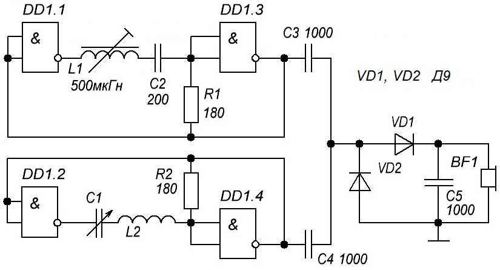

Металлоискатель-3
В основе металлоискателя (рис. 1) - два генератора на логических элементах 2И-НЕ. На элементах DD1.1 и DD1.3 собран генератор. Частота генератора - 465 кГц. Выбор такой рабочей частоты не случаен - сама частота задается последовательным колебательным контуром L1C2, а сам контур для простоты взят из тракта ПЧ радиоприемника.
На элементах D1.2 и D1.4 собран второй генератор. Частота его работы задается переменным конденсатором C1 и катушкой L2.

Рис. 1 - Схема металлоискателя
Катушка L2 служит датчиком-антенной: она наматывается на каркасе диаметром 200 мм проводом ПЭЛ-0,4.
Сигнал с обеих генераторов смешивается и поступает на схему умножения на диодах VD1, VD2 и непосредственно на головной телефон (наушник) BF1.
При появлении металлического предмета возле катушки L2 произойдет смещение частоты генератора и следовательно на смесителе возникнут биения, которые и отобразятся в наушниках.
Для напряжения 9 В можно использовать микросхему К176ЛА7 КМОП-технологий (они более экономичные), для напряжения 5 В - ТТЛ-микросхему К155ЛА3.
Таблица 1
| Обозначение | Наименование | Номинал | Кол-во | Примечание |
|---|---|---|---|---|
| BF1 | Головной телефон | 1 | сопротивление не менее 2 кОм | |
| C1 | Конденсатор переменный | 25-150 пФ | 1 | КПК-2 |
| C2 | Конденсатор | 200 пФ | 1 | |
| C3-C5 | Конденсатор | 1000 пФ | 3 | |
| DD1 | Микросхема | К176ЛА7 | 1 | при напряжении питания 9 В |
| К155ЛА3 | при напряжении питания 5 В | |||
| L1 | Катушка индуктивности | 500 мкГн | 1 | |
| L2 | Катушка индуктивности | 1 | самодельная | |
| R1, R2 | Резистор постоянный | 180 Ом / 0,25 Вт | 2 | |
| VD1, VD2 | Диод | КД521Б | 2 |